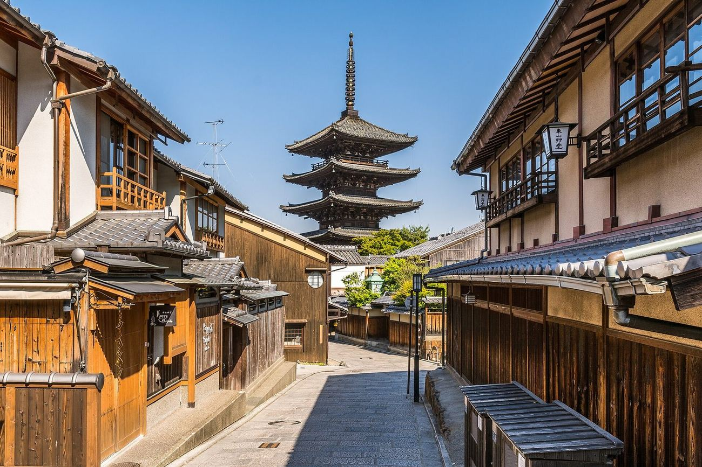
| 要做的事 | 期限 | 怎麼弄 |
|---|---|---|
| 🚆 HARUKA 優惠票 ×4 兩人去回 | 🔴 出發前 | KKday／Klook 搜「WEST QR はるか片道きっぷ」，¥2,200／張。到日本就買不到（JR 官網寫明）。要用手機出示 QR（截圖無效），帶護照 |
| 🥩 力山 訂位 10/25 18:00 | 🟡 10/24 前 | AutoReserve 或食べログ線上訂（只收到前一天）。每人 ¥11,000 起 |
| 🍱 かね正 訂位 10/28 晚餐 | 🟡 越早越好 | 電話 075-532-5830（日語）。只有 14 席、只收現金 |
| 🍲 湯豆腐 嵯峨野 10/27 午餐（想吃的話） | 🟡 10/25 前 | 官網連到 TakeMe／一休／Hot Pepper 訂。只收現金或 PayPay |
| 🏮 先斗町 すいしん 10/26 晚餐（想吃的話） | 🟡 出發前 | 食べログ或ぐるなび訂「先斗町 本店」（不是京都駅前店）。天天天不能訂 |
| 🥩 燒肉 弘 10/27 晚餐 | ❓ 確認 | 訂的是哪一家？八条口店（近飯店，TORETA 或 075-662-1129）還是京都駅前店？ |
| 🚂 嵯峨野小火車票 10/27 11:30 亀岡→嵐山 | ✅ 已買 | 手機出示 QR 直接進站，不用取票。當天不能改、不能退 |
| 🐟 いとおかし 10/28 午餐 | ✅ 已訂 | 看 TableCheck 確認信上的時間。早到不能先坐、遲到 15 分會被取消、限 50 分鐘 |
| 📱 Visit Japan Web | 🟡 出發前 | 入境審查、海關申報兩個 QR，各截圖存相簿 |
| 💴 現金 每人 ¥20,000–30,000 | 🟡 出發前 | 麵屋優光、湯豆腐 嵯峨野、かね正、フランソア 只收現金；飯店反而不收現金 |
| 💳 手機交通卡 | 🟡 出發前 | iPhone 錢包加 Suica 或 ICOCA，JR、地鐵、近鐵、公車都能刷 |
| 10/25 日 | 10/26 一 | 10/27 二 | 10/28 三 | 10/29 四 | |
|---|---|---|---|---|---|
| 主題 | 抵達・京都駅 | 二條城・錦市場・先斗町 | 嵐山・小火車 | 清水寺・百貨・祇園 | 京都駅採買・回程 |
| 上午 | 09:40 桃園起飛 13:10 抵關西 T2 | Blue Bottle・六角堂 二條城 | JR 到馬堀 嵯峨野小火車 | 清水寺・三年坂 八坂庚申堂・二年坂 | 退房寄行李 東本願寺・開化堂 |
| 午餐 | — | 麵屋優光 💴現金 | 湯豆腐 嵯峨野／よしむら | Ito Okashi ✅已訂 | 京都駅 |
| 下午 | HARUKA→京都 check-in・Yodobashi | 丸久小山園・ななや 一保堂・錦市場・新京極 | 大河內山莊・常寂光寺 竹林・天龍寺・渡月橋 | 大丸・Hands・高島屋 高台寺（17:00 點燈） | 茶の菓・よーじや 11:00 回飯店拿行李 11:30 HARUKA→機場 |
| 晚上 | 力山（要訂位） 中村藤吉 | 先斗町晚餐 河原町購物 | AEON MALL 壽司／燒肉 | かね正 💴現金 白川・花見小路・フランソア | 15:25 起飛 17:55 抵桃園 |
| 住 | OMO3 京都東寺（4 晚） | — | |||
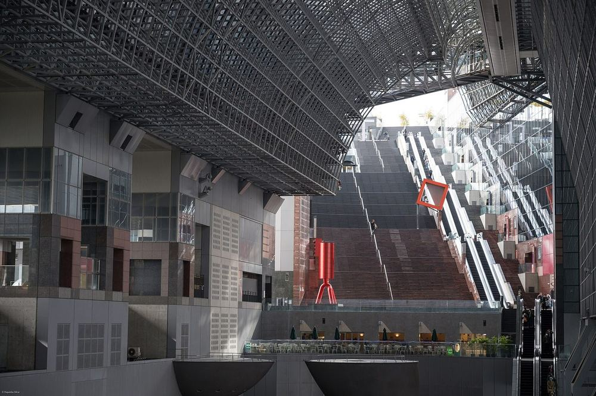
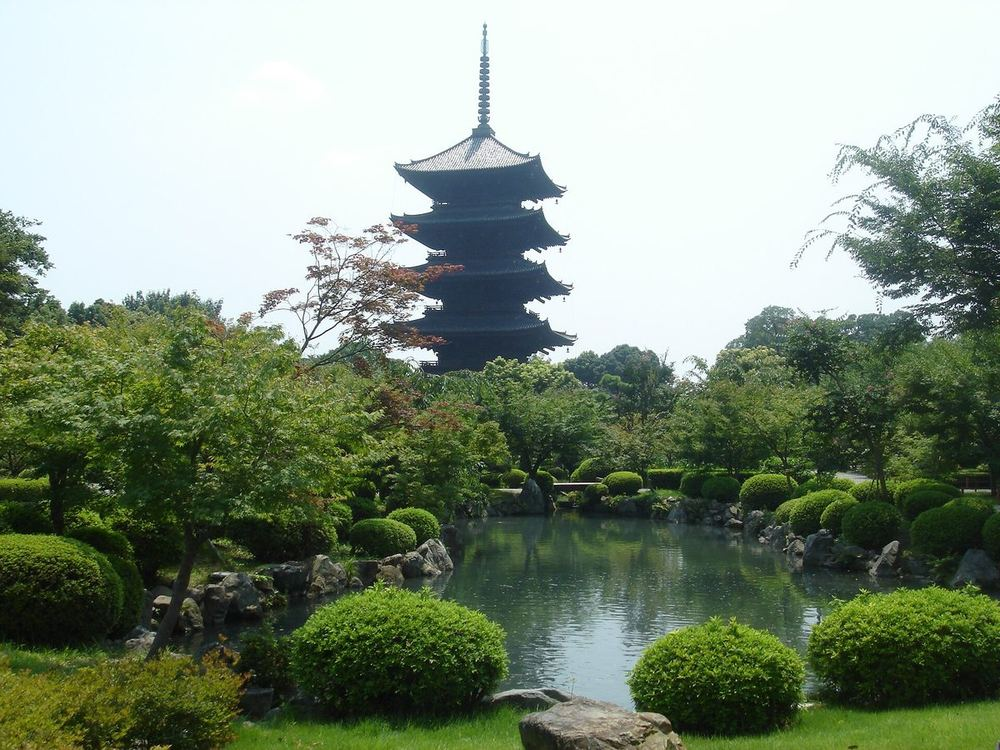
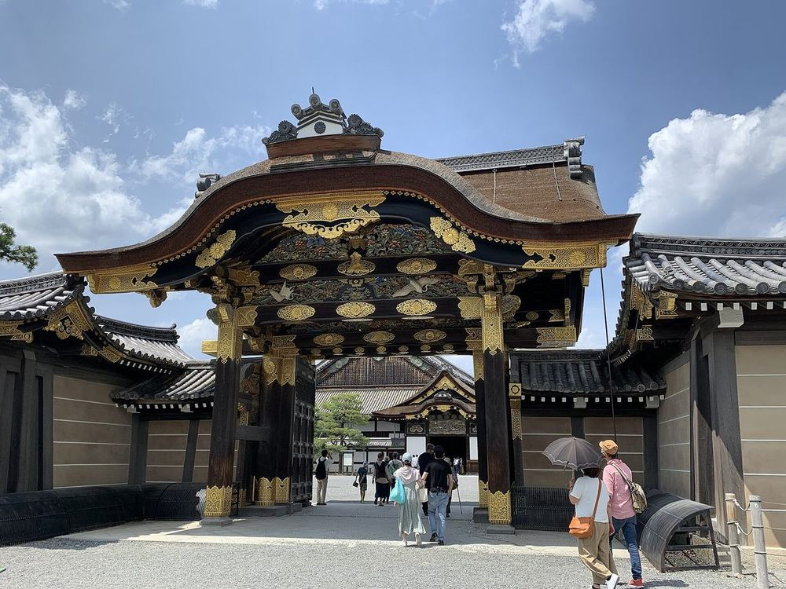
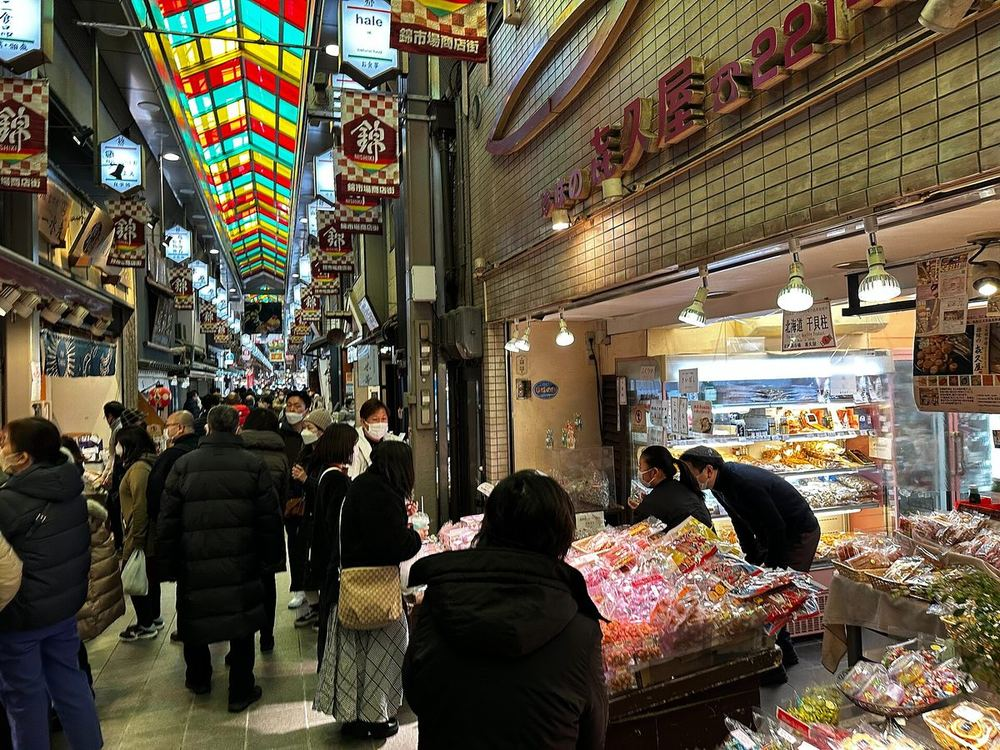
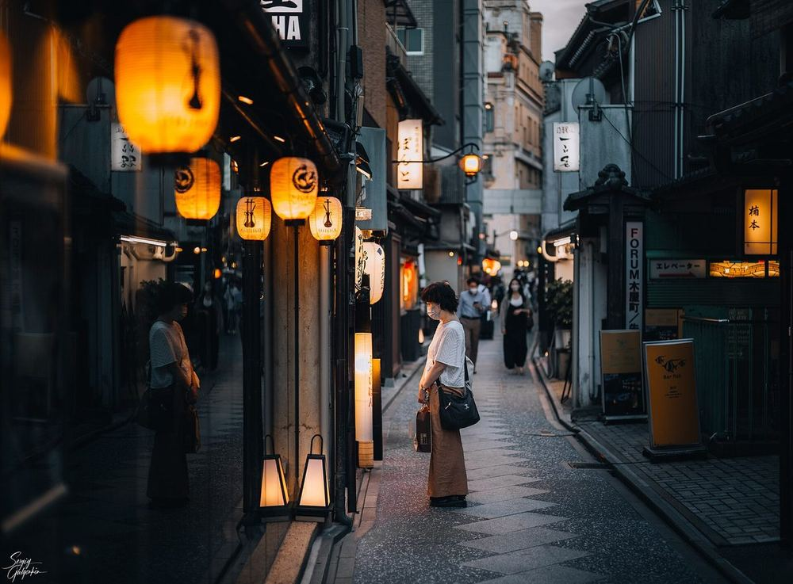
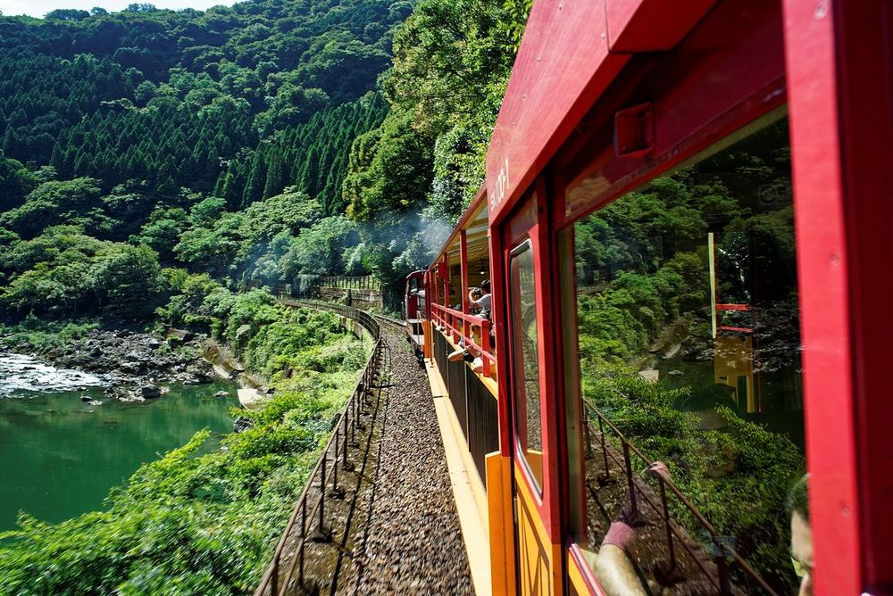
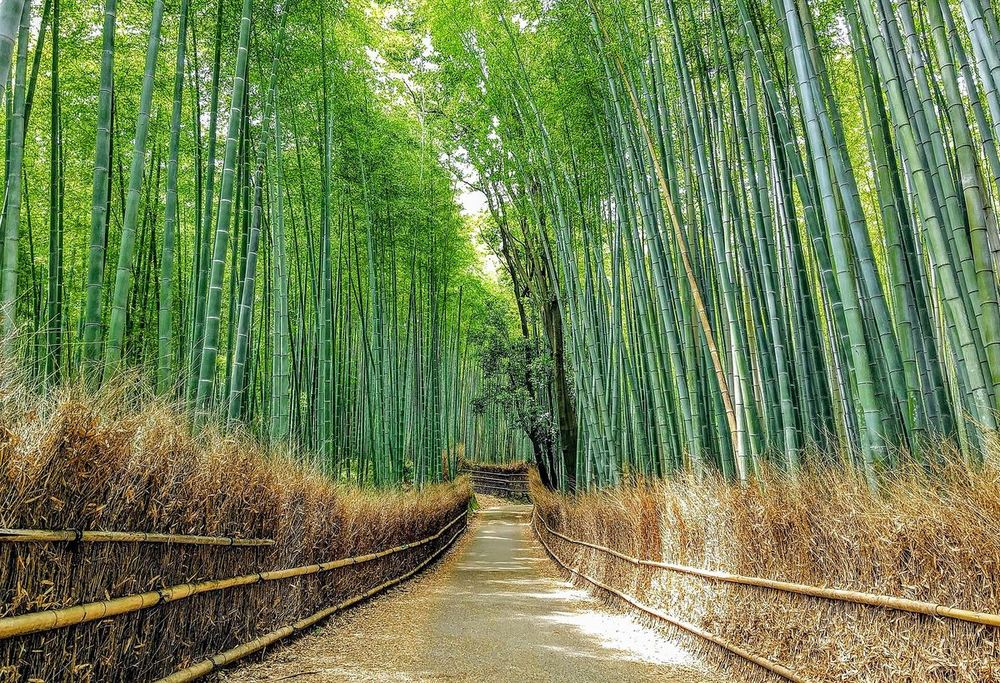
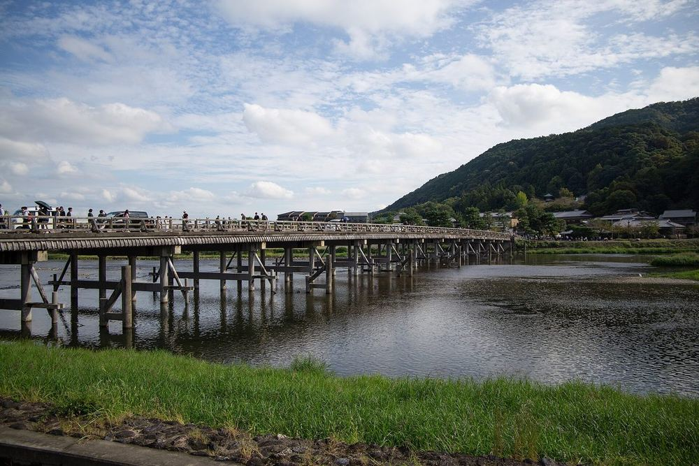
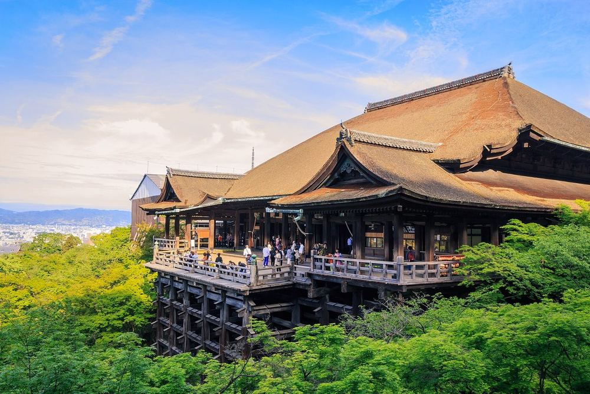
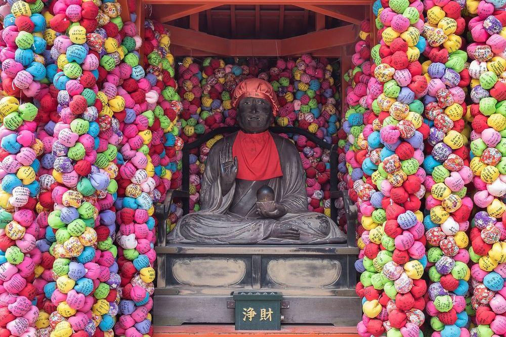
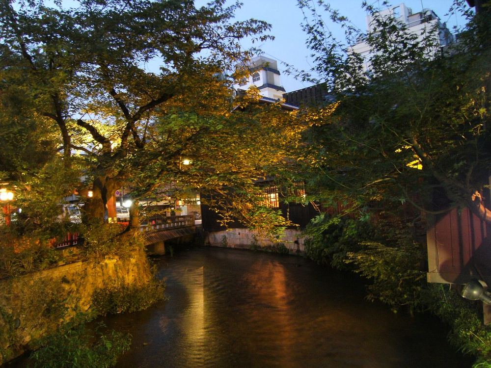
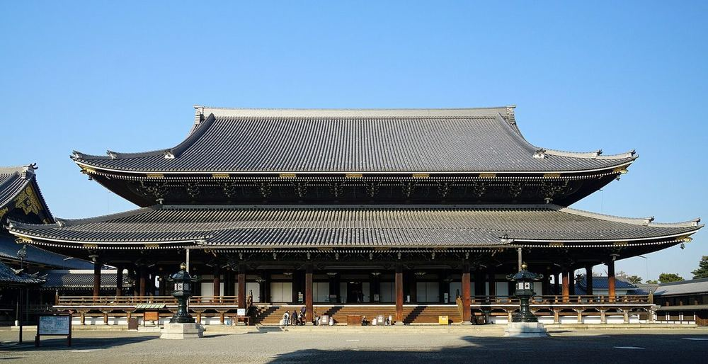
| 哪天 | 店 | 點什麼／買什麼 |
|---|---|---|
| D1 晚 | 中村藤吉 京都駅店 | 生茶ゼリイ（抹茶凍）、抹茶聖代 |
| D2 | 丸久小山園 西洞院店 | 茶房「元庵」西洞院限定抹茶配和菓子 ¥1,595–2,035 |
| D2 | ななや 京都三条店 | 抹茶冰淇淋 7 種濃度（No.7 最濃）；抹茶巧克力 |
| D2 | 一保堂 京都本店 | 喫茶室「嘉木」抹茶配和菓子；帶ほうじ茶（焙茶）回家 |
| D3 | 大河內山莊 | 門票原本附抹茶，2024 年起可能改成自助飲料 |
| D5 | 開化堂咖啡 | 百年茶筒老舖開的咖啡廳 |
| D5 | 京都駅 八条口 | 茶の菓（濃茶貓舌餅，5 枚 ¥951）：最好帶的伴手禮 |
薄茶／濃茶：一般喝的是薄茶；濃茶用量多一倍、很稠，茶道裡才喝得到。
抹茶粉帶回家：開封後放冰箱、一個月內喝完；小罐（20–40g）比大包划算。丸久小山園說明大量購買可能被拒（防代購）。
免稅：食品算消耗品，會封袋、在日本不能拆 → 要在日本吃的別辦免稅。
手機交通卡（Suica／ICOCA）在京都 JR、地鐵、近鐵、公車都能刷。
計程車：2025/8 起 起跳 ¥500（0.9km），之後每 255m ＋¥100。兩人坐常常跟搭車差不多價。叫車用 GO App。
近鐵 東寺↔京都：1 站 ¥180、2 分，別上「特急」（不停東寺、還要另買特急券）。
JR 嵯峨野線：去馬堀只搭往「亀岡／園部」的普通車。
只收現金：麵屋優光、湯豆腐 嵯峨野（也收 PayPay）、かね正、フランソア。
不收現金：OMO3 飯店（住宿稅、早餐都刷卡）。
領錢用 7-11 ATM（有中文、台灣卡大多能領）。
Google Maps（書裡每個 📍 都直接開到那家店）／GO（叫計程車）／WEST QR（HARUKA 票）／Visit Japan Web／Google 翻譯（相機對著菜單翻）
10/21 日本氣象協會實況：嵐山、清水寺、高台寺都還是綠葉。今年預測嵐山紅葉最美是 11/13 以後。這趟看到的是初秋綠意＋零星轉色，不是滿山紅葉。
天氣：早晚約 10–13°C、白天 18–22°C → 薄外套＋好走的鞋。
錦市場、清水寺禁止邊走邊吃（在店門口吃完）。花見小路兩旁私人小巷禁止進入、禁止拍照。不要追拍藝妓。竹林不要碰、不要刻竹子。